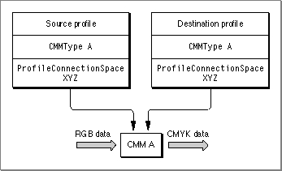
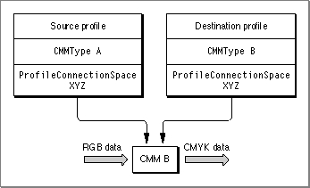
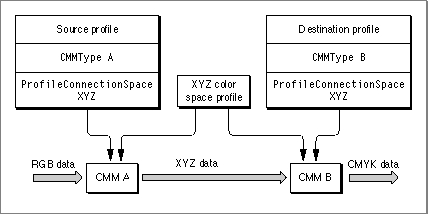
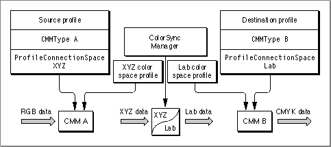
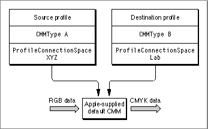

How the ColorSync Manager Selects a CMM
A profile header contains a field called theCMMTypefield that specifies the preferred CMM for that profile. When the source and destination profiles specify different CMMs or when a specified CMM is unavailable or unable to provide a requested color-matching service, the ColorSync Manager follows a CMM selection algorithm or arbitration scheme to determine which CMM to use for color conversion and matching. Here is how the CMM selection algorithm works:Figure 4-1 Color matching when the source and destination profiles specify the same CMM
- If the source and destination profiles specify the same CMM and that CMM component is available and able to perform the matching, then the specified CMM maps the colors directly from the color space of the source profile to the color space of the destination profile. This is the simplest scenario, and Figure 4-1 illustrates it.

Figure 4-2 Color matching using the destination profile's CMM
- If the source and destination profiles specify different CMMs, then the ColorSync Manager follows these steps to choose the CMM:
1. If the CMM specified by the destination profile is available, is able to perform the color matching using the two profiles, and is not the Apple-supplied default CMM, then the ColorSync Manager uses this CMM. Figure 4-2 shows this scenario.

2.If the destination profile's preferred CMM is unavailable or unable to perform the color-matching request using the two profiles, then the ColorSync Manager looks for the CMM specified by the source profile. If the CMM specified by the source profile is available, is able to perform the color matching using the two profiles, and is not the Apple-supplied default CMM, the ColorSync Manager uses this CMM. Figure 4-3shows this scenario.
Figure 4-3 Color matching using the source profile's CMM3.If both the source-preferred CMM and the destination-preferred CMM are available, but neither is able to perform the match alone, the ColorSync Manager uses the source profile's CMM to convert the colors of the source image from the source profile's color space to an interchange color space using the XYZ color space profile as the destination profile. Next, the ColorSync Manager uses the preferred CMM specified by the destination profile to convert the colors now specified in the interchange color space to colors expressed in the color space of the destination profile using the XYZ color space profile as the source profile. The color conversion and matching work this way if both profiles specify the same interchange color space. Figure 4-4shows this scenario.
Figure 4-4 Color matching through an XYZ interchange space using both CMMs
4.If both the source-preferred CMM and the destination-preferred CMM are available, but neither is able to perform the match alone and both profiles specify different interchange color spaces, the ColorSync Manager uses the source profile's CMM to convert the colors of the source image from the source profile's color space to its interchange color space using the appropriate color space profile as the destination profile. The example shown in Figure 4-5uses the XYZ color space profile as the destination profile. Then the ColorSync Manager inserts a part into the process, itself converting colors from the source profile's interchange color space to the destination profile's interchange color space. Next, the ColorSync Manager uses the preferred CMM specified by the destination profile to convert the colors now specified in the destination profile's interchange color space to colors expressed in the destination profile's color space using the appropriate color space profile as the source profile. The example shown in Figure 4-5uses the Lab color space profile as the source profile.
Figure 4-5 Matching using both CMMs and two interchange color spaces
Figure 4-6 Color matching using the Apple-supplied default CMM
- If neither the source nor the destination profile's preferred CMM is available or able to perform the color conversion and matching, then the ColorSync Manager uses the Apple-supplied default CMM, which will always attempt to perform the match. Figure 4-6 shows this scenario.
